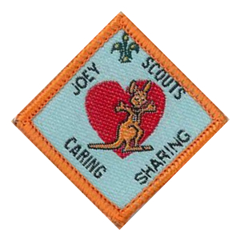
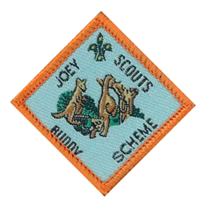
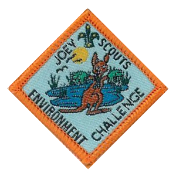
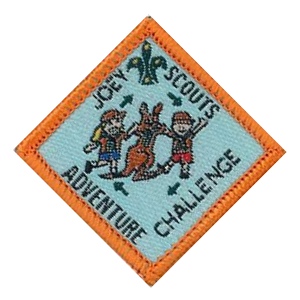
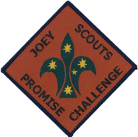
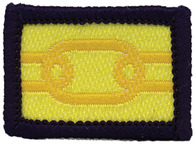

Badges
Joey Participation Scheme
The Participation Scheme includes five badges. Each of the badges are usually done by the whole Mob together. Some badges have elements that families can do together with their Joey Scout.
In addition to the specific aspects of each badge, these activities develop the Joey Scouts' social awareness and spirit of teamwork. The participation scheme has an accent on cooperative, active learning.

Care and Share Activity
Each Mob plans and runs programs for one month that focus on caring and sharing. Then the Mob does a special deed for the local community.
Some suggestions for the special deed include:
- Take some dogs from an Animal Refuge for a walk.
- Collect cans for a food drive.
- Do Clean Up Australia Day or clean up a local park.
- Visit a hospital or nursing home and sing songs, chat, hand out flowers or books, perhaps something seasonal like candy canes or Easter eggs.
- Plant trees during National Tree Day. Local councils often provide everything you need, you just have to turn up with your Mob and provide the labour.

Buddy Scheme
Joey Scout Mobs visit each other, share activities and have great fun. The Mob Buddy Scheme aims at building a rapport and friendship between different Mobs.
Any activity is acceptable for the visit, although it's usually one Mob going to the hall and participating in the meeting of the second Mob, then vice versa. You also have the option of using the Internet to interact with the other Mob if it's too far to meet up in person.
The Mobs then share an outdoor activity such as a sleepover or a Mob Holiday.

Environment Challenge
The Mob undertakes four simple Environmental Challenges (pdf) that aim to develop an appreciation of and respect for the natural environment, to gain knowledge of Australian plants and animals, and to develop a sense of responsibility in behaviour and action.
Four simple environmental tasks need to be completed which reflect nature and the outdoors:
Pick one thing from this list:
- Make a list of animals that have pouches
- Make a list of the birds that visit your garden or park for one week. List as native or introduced.
- Plant some native trees or shrubs at a suitable venue.
- Discuss with the Joey Scouts what you would do if you found sick, orphaned or injured wildlife.
Pick one thing from this list:
- Make a bird feeder and hang it safely on a tree at home.
- Find a tree as tall as yourself. Draw what lives in it.
- Use a PET bottle to make a terrarium or pot pourri container.
- Make a collage of different shaped and sized leaves.
Pick one thing from this list:
- Clean up a local park.
- Visit a Wildlife Area or have a Wildlife officer visit.
- Observe some wildlife at the local park.
- Visit a Botanic Garden and find some native animals and plants.
Pick one thing from this list:
- Make a container and start collecting aluminium cans.
- Learn what garbage to recycle. Make containers to recycle household garbage.
- Find out where the water in the street goes to.
- Discuss with the Joey Scouts about the care of our planet.

Adventure Challenge
The Adventure Challenge is designed to broaden each Joey Scout's life experiences through visiting places to which the Mob doesn't usually go.
Requirements for the Adventure Challenge are:
- Leaders program and run two outings to places unusual to your Mob, getting Joey Scouts to take photos if possible.
- Leaders run an adventure program for the Mob.
- Have your Joey Scouts fill in the log sheets about their outings and the Adventure Program.
Some suggested adventures are
- A trip to the beach, creek or waterway.
- A trip on public transport.
- Visit a zoo, sanctuary or wetlands.
- Go for a bushwalk.
- Visit a museum or historical site.
- Visit a farm - sheep, dairy, orchard or market garden.
- Go on a trip to the city.
- Visit the Botanical Gardens.
- Visit an unusual place in your local area.

The Promise Challenge
The Promise Challenge (pdf) is the major Challenge for the Joey Scout Section and has some individual elements as well as activities to do with the Mob. This is generally attempted by the older Joey Scouts. The aim of this challenge is to allow Joey Scouts to gain a greater understanding of the Scout Promise and Law, to learn about Scouting's Founder, Lord Robert Baden-Powell, and to discover the history of Scouting. The challenge requires the Joey Scout to complete certain elements, such as research and discussion with their parents and Leaders, away from the Mob meetings. The Joey will also be required to give a presentation to the Mob on completion of the task.

Cub Link Badge
The Link badge (pdf) is the last a Joey will do before they move up into Cubs.
The requirements are:
- Attend four Cub Scout meetings.
- During talks with the Cub Scout Leader:
- show a knowledge, understanding and acceptance of the Cub Scout Promise and Law.
- know and understand the salute, demonstrate the Scout sign and left handshake.
- discuss the going-up and investiture ceremonies.
- Discuss being a Cub Scout with your future Sixer.
- Know the names of the Leaders in the Cub Scout Section.
- Discuss the visit with Joey Scout Leader and the Joey Scout Mob.
- Hear how Scouting and Cub Scouting began and the first Jungle Story.
- Understand the meaning of ‘Good Turns’ and how important it is that Cub Scouts do a good turn.